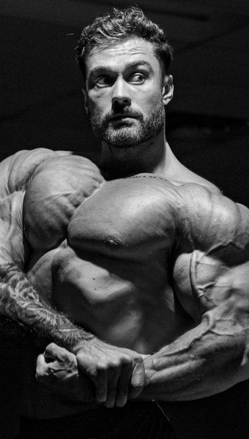

The Ultimate Calisthenics Workout Transformation
Calisthenics is a type of workout that uses a person’s body weight with little or no equipment.
The exercises involve movements that use large muscle groups, such as pushups.
People typically perform these exercises at a moderate pace. They help to improve coordination, flexibility, and strength.
Calisthenics originated in Ancient Greece and remains popular today.
Most people can perform these exercises, regardless of the level of their athletic ability. Many of them do not require any equipment.
Calisthenics Vs. Weight Training

The term calisthenics refers to training that uses primarily bodyweight
exercises to develop strength, endurance, mobility, and coordination.
It’s the kind of exercise that gymnasts and martial artists have done
for eons using their own body weight, and while it develops muscle mass
too, that’s more of a byproduct. You can expect to get very strong relative
to your bodyweight when you do calisthenics training, and master your control
of your body in various positions and movements. I.e., you’ll become stable and athletic.

Weight training uses external loads—free weights, cables, machines—to strengthen
the body, and while it can develop the same qualities that calisthenics can,
it’s better-suited for those who want to build maximum muscle mass, power, and
absolute strength. This makes it a potentially better choice for athletes in
sports like football, baseball, and track and field. A gymnast will usually be
able to do more pullups and pushups than a bodybuilder or powerlifter, but the
one who lifts heavy weights can probably move more overall load and will look
bigger and stronger. Neither kind of training is superior to the other— both
have their advantages, depending on your goals.
How Long Should You Recover After A Calisthenics Workout?
Each of these workouts can be performed up to four times per week on non-consecutive days.
Three to four workouts per week is enough. For example, Monday, Wednesday, Friday, and Sunday.
You can also combine them, performing the At-Home workout one day, the Intermediate on another,
and the Advanced (if you dare!) on a third day. If you feel extra sore or run down on a day
you had planned to train, take another day’s rest before your next workout
(or perform light exercise or aerobic activity, such as walking/jogging, cycling, yoga, mobility work, etc.).
At-Home Calisthenics Circuit Workout
Here’s a bodyweight workout that’s appropriate whether you’re a total beginner
to training or you have a little experience with lifting weights but you want
to get back to basics with calisthenics training. You can do this routine at
home if you have a pullup bar, and it may help to have an elastic exerciseb
band as well, which can help to unload some of your bodyweight and make
exercises like chinups and dips easier.
1. Chinup
Reps: As many as possible
[See 00:49 in the video above]
Use a shoulder-width grip and turn your palms to face you. If you can’t get at least
5 reps on your own, attach an elastic exercise band around the bar and stand in the open loop to unload some of your bodyweight.
2. Dip
Reps: As many as possible
[See 01:00 in the video]
Lower your body until your upper arms are parallel to the floor. If you can’t
get at least 5 reps on your own, attach an elastic exercise band to the dip bars
and stand (or kneel) in the open loop to unload some of your bodyweight.
If you don’t have dip bars, you can use the backs of two chairs.
3. Jump Squat
Reps: As many as possible
[See 01:15 in the video]
Stand with feet between hip and shoulder-width and quickly lower
your body until your thighs are parallel to the floor. Explode upward
as high as you can. Land softly, and reset yourself before you begin the next rep.
4. Pushup
Reps: As many as possible
[See 01:28 in the video]
Place your hands just outside shoulder width and lower your body
until your chest is about an inch above the floor. Keep your body
in a straight line with your core braced. Your lower back shouldn’t
arch and your elbows should point 45 degrees from your torso.
5. Crunch
Reps: As many as possible
[See 02:08 in the video]
Raise your torso until your shoulder blades are off the floor.
6. Mountain Climber
Reps: Go for 30 seconds
[See 02:19 in the video]
Stand with feet shoulder width and squat down to place your hands on the floor.
Now shoot your legs behind you fast so you end up in the top position of a pushup.
Jump your legs back up so they land between your hands and then stand up quickly.
BONUS: Jump Rope
Reps: Jump for 30 seconds
[See 02:26 in the video]
If you have a jump rope, jump for 30 seconds,
landing on the balls of your feet. Any type of jump is OK, or mix a few together.
Intermediate Calisthenics Circuit Workout
This workout is good for people with a year or more of strength
training or bodyweight-only training under their belt. You can do it
at home, but you’ll need a pullup bar and some space to run, so a
public park or a gym may be more appropriate.
1. Feet-Elevated Pushup On Rings
Reps: As many as possible
[See 00:58 in the video above]
Set the handles of a suspension trainer around shin level and rest
your feet on a bench behind you. Suspend yourself over the handles
in a pushup position and then lower your body until your chest is
just above your hands. Keep your body in a straight line with your core braced.
2. Feet-Elevated Inverted Row
Reps: As many as possible
[See 01:20 in the video]
Set the handles of a suspension trainer low enough so that
when you hang from them with arms extended, your body is
angled 45 degrees to the floor, or lower. (If you’re strong enough,
rest your feet on a bench for an added challenge.) Keep your body
in a straight line and brace your core as you pull yourself up.
3. Jump Squat
Reps: As many as possible
[See 01:39 in the video]
Stand with feet between hip and shoulder-width and quickly lower your
body until your thighs are parallel to the floor. Explode upward as high
as you can. Land softly, and reset yourself before you begin the next rep.
4. Burpee
Reps: As many as possible
[See 01:55 in the video]
Stand with your feet between hip and shoulder width,
and squat down to place your hands on the floor in front
of you. Jump your legs back into the top of a pushup position,
then reverse the motion to come back up to standing.
5. Leg Flutter
Reps: Repeat for 60 seconds
[See 02:38 in the video]
Flatten your lower back into the floor and brace your abs.
Extend your legs overhead and then lower them as far as
you can before you feel your lower back is about to buckle up from the floor.
Begin raising and lowering both legs, alternately, a few inches
(as if you were kicking your legs while swimming).
6. Sprint
Reps: Run for 30 seconds
[See 02:58 in the video]
Run as fast as you can maintain for 30 seconds.
Other options are to run up a hill, or run in place.
Advanced Calisthenics Circuit Routine
If you’ve been training for a few years and feel pretty strong
on bodyweight exercises, give this advanced routine a shot.
1. Crow Pose
Reps: Hold for 30 seconds
[See 00:28 in the video above]
Get into a deep squat position and plant your hands on the floor.
Tip your body forward and rest your knees on your elbows.
Extend your back and hips so that your bodyweight is supported on your hands,
and hold the position.
2. Jump Squat with Rotation
Reps: Jump in the 3 directions shown for 30 seconds
[See 01:02 in the video]
Lower your body into a squat quickly and then explode upward as high
as you can. Swing your arms back as you go down, and throw them forward as
you jump. Land softly, driving your knees outward. Hop 90 degrees to your right side,
and repeat the jump. Hop back to face forward again, jump, and then rotate to
face your left side, and jump again. Continue in this manner, jumping in the three
different directions. Don’t let your knees cave inward on your landings, and make each jump as vertical as possible.
3. Hindu Pushup
Reps: Repeat for 30 seconds
[See 01:40 in the video]
Get into pushup position and drive your hips backward as you extend your arms overhead.
You’ll end up in a downward dog pose. Now lower your chest toward the floor in an
arcing motion, finishing the pushup with your chest facing forward and your hips just
above the floor (an upward dog pose). Keep your core braced so that your
ribs don’t flare, and avoid shrugging your shoulders. Keep your shoulder blades
together and pulled downward as you move toward the floor, and spread them apart
as you push up.
4. Candlestick Roll
Reps: Repeat for 30 seconds
[See 02:30 in the video]
Get into a deep squat and roll backward onto your shoulders. Roll forward again
and go into the bottom of a deep lunge with your back knee pointing 90 degrees
to the side. The heel of your front foot should stay flat on the floor.
\Repeat on the other side.
5. Lateral Squat w/ Rotation
Reps: Repeat for 30 seconds
[See 02:59 in the video]
Shift your weight to your left leg so you feel like you’re sitting into your
left glute. Now raise your right knee up and outward, planting your right foot
on the floor at a 90 degree angle—both heels should be in line. Lower your body
into a squat, keeping a long spine from your head to your pelvis.
Alternate sides each rep.
6. Xs and Os
Reps: Repeat for 30 seconds
[See 03:25 in the video]
Lie on your back and extend your arms and legs to form an X shape.
Flatten your lower back into the floor. Perform a crunch, drawing
your knees to your chest along with your arms.